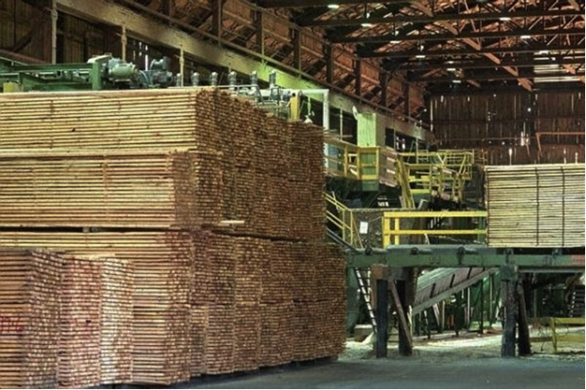
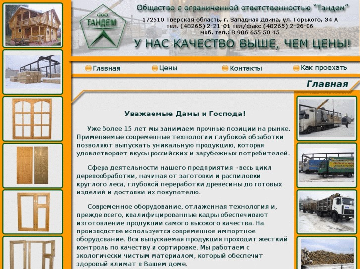

Западная Двина
Экономика
1.ДОК (Деревообрабатывающий комбинат)

На берегу реки рядом со станцией с 1907 г. начала расти лесопилка Хурина, национализированная большевиками в революцию.После Второй мировой войны деревообрабатывающий комбинат (ДОК) - предприятие с огромными цехами, сетью детских учреждений, пожарной станцией. В наше время основным видом деятельности являются деревообрабатывающая промышленность.
2.Деревообрабатывающая фабрика ООО «Тандем»

Ведущее предприятие деревообрабатывающей промышленности.